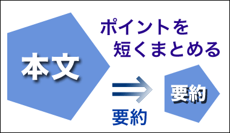
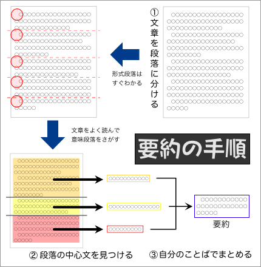
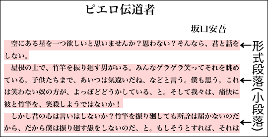
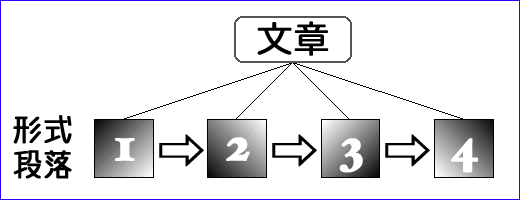
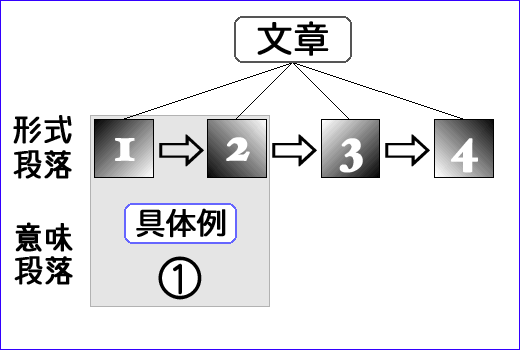
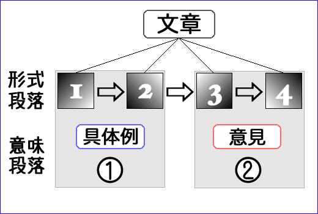
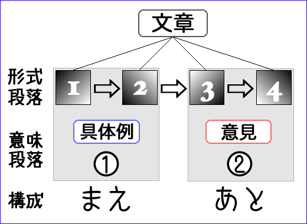

要約とは

要約とは、文章のポイントを短くまとめて示すことをいう。
また、長い文章のポイントを短くまとめて示した文章も要約と呼ばれる。
要約は、以下のようなものでなければならない。
- もとの文章のポイントを含んでいること
- 長さの短い文章であること
- 全体が文章としてまとまっていること
要約で大切なことは、『ポイント』が簡潔に示されているということである。そのためには、もともとの文章の順序を変えたり、表現を変えたりしなければならないことがある。
要約の方法
もとの文章から、すぐに要約を作るのは難しい。文章を要約する場合には、要約の文章を書く前に、いくつかの作業が必要になる。
文章を要約するときには、次のような手順がよいだろう。
- 文章を段落に分ける
- 段落の中心文を見つける
- 自分のことばでまとめる

文章を段落に分ける
文章を要約するときには、まず文章の全体をよく読み、全体をいくつかの段落にわけてみるのが良いだろう。
文章は、いくつかの形式段落に分かれているのが普通なので、ほとんどの場合、意味段落にわけることだけを考えればよい。
形式段落と意味段落
改行と１字下げることとで表示されるまとまりを形式段落という（形式段落は「小段落」と呼ばれることもある）。

一方、文章を内容のまとまりによって分けたとき、ひとつひとつのまとまりを意味段落という（意味段落は「大段落」と呼ばれることもある）。
意味段落は形式段落と同じものではない。意味段落は形式段落より大きいのが普通である。いくつかの形式段落のまとまりが意味段落なのである。そのため、意味段落は大段落と呼ばれ、形式段落は小段落と呼ばれる。
- 形式段落（小段落）
- →改行と１文字の字下げによって示される段落のこと
- 意味段落（大段落）
- →内容の上のまとまりによって設定される段落のこと
意味段落と文章の構成
文章を意味段落にわけるときには、文章の構成を考えるとよい。２段構成なのか、３段構成なのかなど、文章がいくつの部分に分かれているのかを考えながら読めば、意味段落が見つけやすくなる。
なお、文章の構成については、【構成について】を参照せよ。
段落の中心文を見つける
文章を要約するときには、それぞれの段落の中心文を見つけるようにするとよい。
中心文とは、段落のなかで、その段落の内容をもっともよく表わしている文のことである。
《段落》 ＝ 〈中心文〉 ＋（ その他の文＋その他の文＋その他の文… ）
中心文は、主に主張や意見、考えをあらわす。一方、中心文ではない文があらわすのは、具体例やくわしい説明、理由などである。
中心文は、段落の始めにあることも、終わりにあることも、中にあることもある。
例１：中心文（主張）→その他の文（理由）
『人間はもっと笑った方がいい。そうすれば、みんなずっと楽しくなるはずだ。もしかすると、争いもなくなるかもしれない。』
中心文→「人間はもっと笑った方がいい。」
例２：その他の文（具体例）→中心文（考え）
『彼は、楽しければ笑います。気に入らなければ怒ります。悲しければ泣きます。しかし、それは彼だけではありません。人間は感情的な生き物なのです。』
中心文→「人間は感情的な生き物なのです。」
例３：その他の文（話題の提示）→中心文（意見）→その他の文（補足）
『あなたは、金持ちと貧乏人のどちらを信用するだろうか。金持ちは信用しないが、貧乏人も信用できない。それが、私の考えである。もちろん、あなたの考えとは違うかもしれない。』
中心文→「金持ちは信用しないが、貧乏人も信用できない。」
自分のことばでまとめる
文章の要約するときには、自分のことばでまとめなければならない。もとの文章のなかにある文や語句をつなぎあわせただけでは、要約とはいえない。
自分のことばでまとめるときには、次の点に注意するとよい。
- 考えや意見を残して、事実や出来事は削除
- 長さが長い文は、修飾語句を削除してみる
- 複雑な文は、二つの文に分けてから考える
- 内容のくり返しは、ひとつの文にまとめる
- まとめや結論がはっきり分かるように書く
例文の要約（１）
次の例文をどのように要約するか考えてみよう。
例文１：
UFOの目撃談は、すでに伝説を作りあげている。何千という新聞報道の他に、これに関するシリーズ本などが出版され、UFOを肯定するものもあれば、否定するものもあり、まじめなものもあればインチキもあるというありさまである。
UFO現象そのものは、最近も目撃の報告が続いているように、それによって影響を受けた様子はない。それは、依然として続いているのである。その正体が何であるにせよ、ひとつ確かなことは、それが「神話」になったということである。
わたしたちは、ここに伝説というものがどのように生まれるのかを見ることができる。暗い困難な時代に、他の天体から「天上の」勢力が地球侵略を試みる、あるいは少なくとも地球に接近してくるという驚異の物語が生まれる様子が見られるのである。人間の想像力が宇宙飛行や他の天体の探検や侵略の可能性を考えることができるようになった時代だからこそだろう。
わたしたち人類は、月や火星を目指し、太陽系の他の惑星やさらには恒星の住人は逆に地球を目指していることになる。わたしたちの宇宙への野心は、私たちの誰でも知っているところだが、他の天体に同様の思惑があるとするのは神話的推測、すなわち「投影」にほかならない。
（C.G.ユンク「噂としてのUFO」の表現を一部修正）
- 読解のヒント１：第２段落（形式段落）の「それ」は何を指している？
- →指示詞の指す内容
- 読解のヒント２：「神話的推測」や「投影」とはどのようなものをいう？
- →「神話的推測」と「投影」の図解
- 読解のヒント３：「神話」にはどのような特徴がある？
- →神話は、間違った論理によって出来ている【→ヒント２参照】。神話は、人々がそれを信じることによってのみ成り立つものである。
文章を段落に分けてみる
上の文章は、すでに４つの形式段落に分かれている。したがって、全体がどのような意味段落に分けられるのかだけを考えればいい。

まず、上の文章では、１番目と２番目の形式段落が、ともに『UFOの目撃談』について述べていることがわかる（つまり、UFO現象という《具体例》について述べている）。１番目と２番目の形式段落は、ひとつの意味段落にまとめることができるだろう。

次に、３番目と４番目の形式段落を読むと、１番目と２番目の形式段落（＝１番目の意味段落）で述べられた《具体例》に対する《意見》が述べられていることがわかるだろう。したがって、３番目と４番目の形式段落も、ひとつの意味段落にまとめることができることになる（＝２番目の意味段落）。

つまり、上の文章は、
《具体例》→《意見》
という二段構成で書かれているのである（「二段構成」については、「作文のポイント」の【→二段構成】を参照せよ）。

段落の中心文を見つけよう
形式段落の中心文
文章を段落に分けることができたら、次に、段落の中心文を見つける。
まず、４つの形式段落の中心文を考え、次に、２つの意味段落の中心文を考えよう。
ここでは、それぞれの形式段落の中心文は次のように考えられる。
- 第１段落の中心文
- UFOの目撃談は、すでに伝説を作りあげている。
- 第２段落の中心文
- その正体が何であるにせよ、ひとつ確かなことは、それが「神話」になったということである。
- 第３段落の中心文
- わたしたちは、ここに伝説というものがどのように生まれるのかを見ることができる。
- 第４段落の中心文
- わたしたちの宇宙への野心は、私たちの誰でも知っているところだが、他の天体に同様の思惑があるとするのは神話的推測、すなわち「投影」にほかならない。
第１段落の中心文
第１段落には、２つの文があるが、２つ目の文は１つ目の文のくわしい説明になっている。そのため、１つ目の文が中心文になる。
第２段落の中心文
第２段落には、３つの文があるが、１つ目と２つ目の文から、３つ目の文が指摘できるという構成になっている。つまり、３つ目の文は、１つ目と２つ目の文で述べられた事実に含まれる重要なポイントを指摘しているのである。したがって、第２段落の中心文は３つ目の文である。
第３段落の中心文
第３段落には、３つの文があるが、２つ目と３つ目の文は、１つ目の文のくわしい説明になっている。そのため、１つ目の文が中心文になる。
第４段落の中心文
第４段落には、２つの文があるが、２つ目の文が、全体のまとめの内容になっていることがわかる。したがって、第４段落の中心文は２つ目の文である。
意味段落の中心文
次に、２つの意味段落の中心文を考えよう。
まず、１つ目の意味段落にまとめられる形式段落の第１段落の中心文と第１段落の中心文の内容は、ほぼ同じであることがわかる。したがって、どちらを中心文と考えても同じことになる。ここでは、より表現が簡潔な形式段落の第１段落の中心文を採用することにする。
- １つ目の意味段落の中心文
- UFOの目撃談は、すでに伝説を作りあげている。
次に、２つ目の意味段落を見ると、形式段落の第４段落の中心文に筆者の考えがまとめられていることがわかる。それがつ目の意味段落の中心文になる。
- ２つ目の意味段落の中心文
- わたしたちの宇宙への野心は、私たちの誰でも知っているところだが、他の天体に同様の思惑があるとするのは神話的推測、すなわち「投影」にほかならない。
自分のことばでまとめてみる
段落の中心文を参考にしながら、自分のことばで要約をまとめてみよう。
次のことがポイントになる。
- ２つ目の意味段落の中心文が、この文章の結論である
- しかし、２つ目の意味段落の中心文は複雑で、わかりにくいので、書き換える必要がある。特に、「神話的推測」という語の意味を明らかにしなければならない（※神話は間違った論理であり、人々がそれを信じることによってのみ成り立つものである）。
- 結論にあうように、１つ目の意味段落の中心文の表現を換える（例えば、「伝説」を「神話」にする）
以下に、要約の例を示しておく。
要約：
UFO現象は、現代の神話である。人間の宇宙への野心を投影して、ただそう信じているだけなのである。
例文の要約（２）
例文２を要約してみよう。
次のことがポイントになる。
- 起承転結の四段構成になっている。文章の結論は第４段落に書かれている。
- 芸術と人生を比較している（２つのものに共通点があると考えている）。
- 芸術と人生の共通点は何だろうか。
練習：例文２を要約しなさい。
例文２：
小林秀雄は、能について「美しい花がある。花の美しさというものはない。」と書いた。ある人は、これを次のように注釈する。芸術は、抽象的な観念に基づくものではなく、現実の感覚に根ざすものなのだと。または、芸術が持つものは主観的で絶対的な価値（つまり『美』）であり、客観的で相対的な価値観によってはかられるべきものではないのだと。
たしかに、現実の中に「美しい花」がなければ、「花の美しさ」というものは存在しようがない。その意味で、誰かが現実の「花」を「美しい」と感じたときに、それが『美』のすべてなのだということはできるかもしれない。少なくとも、「美しさ」の客観的な尺度がどこかに存在していて、わたしたちがそれに従って「花の美しさ」を理解しているというわけではないだろう。
私にとって、能というのは教育テレビのなかでもとりわけ退屈きわまる番組で、およそ芸術などというものにも縁はない。しかし、うまい酒を飲んだとき、また、うまい酒を飲みながらおいしい刺身を食べたとき、小林のことばをぼんやりと思い出すことがある。そして、そのときの私には、うまい酒があるというのが唯一の現実であって、酒のうまさというようなものは実はどうでもいいのである。だいたい、うまい酒というのは黙って飲むもので、うまさについてあれこれ語る輩などおおよそ信用できたものではない。
多分、「美しい花」を見た人は、それを心の中にとどめ、時折思い返せば良いのだろう。その「花の美しさ」について、あれこれ書いたり語ったりすることはない。ひょっとすると、人間にとって経験することや感じることは、理解することや考えることよりも大切なのかもしれない。わたしたちの人生をつくっているのも、その楽しさや辛さといったものではないのだ。
- 読解のヒント：筆者が否定的に述べているものと筆者が肯定的に述べているものとはどのように整理できる？
- →筆者の評価を整理した表
要約の例：以下の部分にマウスポインタをのせるか、選択してください
芸術は、体験するべきものであり、理解すべきものではない。人生も同じである。具体的な経験や体験の積み重ねこそが人生なのである。
- 参考文献：
-
- アカデミック・ジャパニーズ研究会[編]（2001）『大学・大学院留学生の日本語２ 作文編』アルク.
- 大内善一（1990）「文章を縮めるコツ—凝縮と要約—」,『國文學 解釈と教材の研究』35(15), pp.78-83, 學燈社.
- 堀内武雄（1986）「主題・要旨・要約はどうまとめるか」,『國文學 解釈と教材の研究』31(14), pp.168-173, 學燈社.

{kind=link}
{kind=link}
{kind=link}